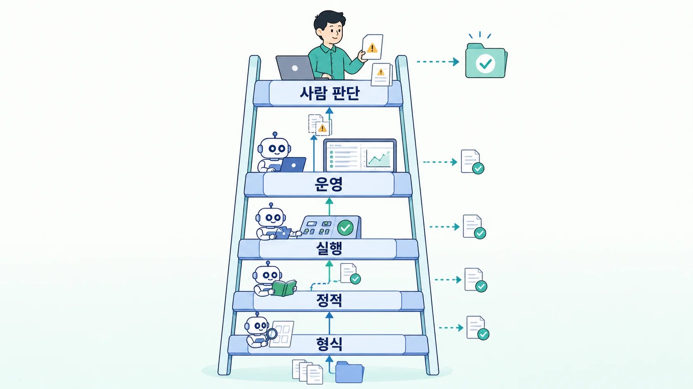
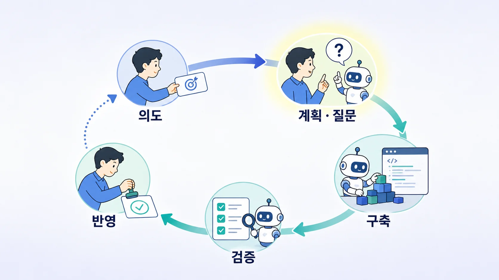
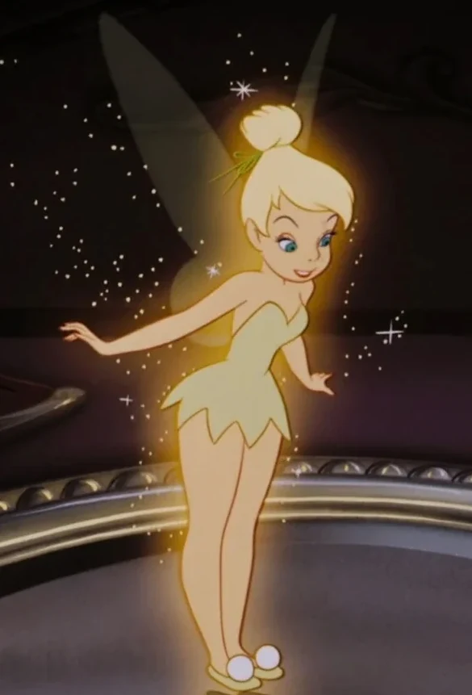

AX 공유 세미나
도구 보급을 넘어 — 업무 운영체계의 문제
2026. 7
"왜 실패했는가"보다
"어떤 구조에서 막히는가"
업계 AX에서 반복되는 패턴을 알아보자
AI를 쓰는 것과 — AI Driven으로 일하는 것은 다르다
도입률은 이미 높다 — 병목은 가치 전환
"컴퓨터 시대는 어디에나 보이지만Robert Solow · 1987
생산성 통계에는 보이지 않는다"
PC · ERP는 깔렸지만
업무 방식은 늦게 바뀜
LLM · Agent는 깔렸지만
운영 방식은 그대로
업무 위에 AI를 얹는다
요약 · 초안 · 검색 · 보조
승인 · 전달 구조는 유지
업무 흐름 자체를 재편
계획 · 실행 · 검증은 Agent
사람은 방향과 Gate
대부분의 조직은 — 아직 왼쪽에 있음
만들기는 쉽다 — 운영이 어렵다
개인의 반경
모델 · API면 충분
데모로 증명 끝
조직의 반경
권한 · 맥락 · 검증 필요
운영 책임까지
전환의 본체는 — 어렵고 느린 오른쪽
난이도는 모델보다 — 위임과 검증의 습관
Microsoft Work Trend Index — "agent boss"
AI가 약해서가 아니라 — 주변 구조가 준비되지 않아서
실패의 원인이 아니라 — 확률을 높이는 조건
문제를 정하기 전에
도구부터 정한다
"무엇을 살까"가 먼저 나오면 — 성과 연결이 늦어진다
McKinsey · BCG — 고성과 조직은 도구보다 Workflow 재설계를 먼저 본다
AI는 빨라졌는데
승인 · 전달은 그대로
초안이 빨라져도 — 대기 · 결재 · 재입력이 Lead Time을 지킨다
BCG 2025 — AI 가치의 대부분을 process reshaping에서 기대
개인은 빨라지고
조직은 그대로
생성이 늘면 — 병목은 리뷰 · 테스트 · 결정으로 이동
OpenAI — 처리량 증가 후 사람 검증 용량이 새 병목이 됐다고 보고
PoC는 있는데
결과 책임자가 없다
AI팀 · 현업 · IT 사이 — 데모 이후를 맡는 사람이 없다
BCG — business · IT 공동 오너십이 고성과 조직의 공통점
쉬운 과제만
반복된다
요약 · 챗봇 · 메일 초안 — 핵심 Workflow는 그대로
MIT NANDA — 좁고 가치 높은 workflow 집중이 격차를 갈랐다고 분석
데이터는 있어도
맥락이 없다
정책 · 예외 · 과거 결정이 안 보이면 — 그럴듯한 답만 나온다
OpenAI — "Agent에게 보이지 않는 것은 존재하지 않는 것"
보안 · 권한 · 감사를
마지막에 붙인다
기준이 없으면 — 보안은 허용 · 차단 둘 중 하나가 된다
NIST AI RMF — 위험 관리를 설계 단계부터 전 과정에 통합
사람이 다 보는 검증은
곧 막힌다
산출물이 늘수록 — 전수 리뷰는 지속 불가능
Claude Code 권한 승인율 93% — 승인이 기계화되며 의미를 잃는다
Anthropic — 격리 도입 후 요청 84% 감소 · OpenAI — 기계 검증 · 상호 리뷰 · 샘플링
교육은 있는데
습관이 없다
강의 다음 날 — 바뀌는 업무가 없으면 제자리
Microsoft — 재설계 · 사용 습관 · 리더십이 함께 움직인다
모든 요청이
중앙으로 몰린다
중앙이 다 떠안으면 — 맥락 부족과 대기열이 남는다
BCG — 중앙 관제와 현업 오너십의 조합이 고성과 패턴
모델 + 도구 − 운영 구조
= 파일럿의 함정
모델의 문제가 아니라 —
운영 구조 설계의 문제로 수렴한다
여러 조직이 — 비슷한 구조로 수렴하고 있다
여섯이 비어 있으면 — 똑똑한 비서에 머문다
Agent가 볼 수 없는 것은 — 없는 것과 같다
OpenAI — 저장소 지식을 system of record로
| 시스템 | 읽기 | 쓰기 | 반영 |
|---|---|---|---|
| Jira | 조회 | 초안 | 등록 전 확인 |
| Confluence | 검색 | 초안 | 게시 전 확인 |
| CI · CD | 로그 | — | 배포는 승인 |
| 운영 DB | 제한 조회 | 금지 | 예외 절차 |
차단이 기본이 아니라 — 경계가 기본

다 읽는 사람이 아니라 — 남은 판단을 하는 사람
사용률 · 생성량 · 이수율
측정은 쉽지만
성과와 느슨한 연결
Lead Time · 재작업률
결함률 · 예외율
흐름의 개선을 직접
Goodhart — 지표가 목표가 되면, 좋은 지표가 아니게 된다
공통 도구 · 권한 · 감사
모델 · 비용 · 평가
사례의 축적
문제 선정 · 맥락 제공
Workflow 재설계
품질 책임
대신 만들어주는 중앙이 아니라 — 안전하게 만들게 하는 중앙
Lifecycle 없이 Agent를 붙이면 — 매번 새로 시작한다

반영의 결과가 — 다시 의도로 돌아오는 루프
출처: AWS AI-Driven Development Life Cycle
"Humans steer.OpenAI · Harness Engineering
Agents execute."
말을 잘 거는 기술
사람이 매번 개입
일할 환경의 설계
루프가 스스로 돈다
"AI가 분석했다"가 아니라 — 분석 Workflow가 남는 것
다섯이 맞는 업무 하나를 — 끝까지
알고 들어가면 — 덜 놀란다
AX는 AI를 많이 쓰는 일이 아니라
업무 구조를 바꾸는 일
그리고 그 구조 만들기는 생각보다 어렵다 —
그래서 미리 같이 봤다

그럼에도…
AX 공유 세미나 · 2026. 7
NIST AI RMF 참조 · 2026-07 기준